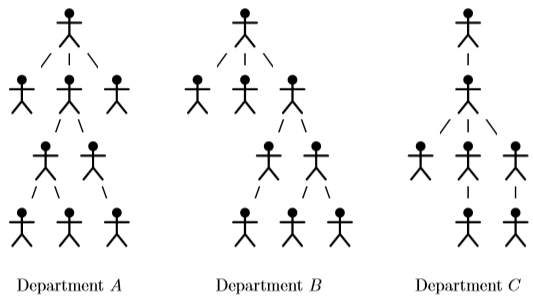

Once upon a time in a country far, far away, the government established the Ministry of paperwork reduction. As you might have guessed, it was the largest ministry ever. The number of officials working there was truly enormous. However, the overall structure was very simple: The minister had at most three subordinate officials, each of them again had at most three subordinate officials and so on.
The recent elections have brought a new minister into this office. He is young, smart and full of unspoilt ideals. He decided to fulfill the name of his institution and start at his door-step. He observed that many parts of the hierarchical structure of the ministry are the same and therefore they must be doing the same job. And whenever two such units do the same, one of them is superfluous and it can be dissolved and all its officials laid off. Your job is to find how many non-equivalent departments there are and to fill in the necessary paperwork (i.e., write the result to the output in the correct format).
Task
You are given the organizational structure of the ministry. Each official has exactly one superior official and at most three subordinate officials (including, possibly, zero). The only exception is that the minister doesn’t have any superior (but he is still limited to three subordinates). There is no specific order of subordinates of any individual official.
A department consists of an official, all his subordinates, all their subordinates and so on. There are two special cases of departments: the full ministry (starting with the minister) and one-man departments consisting of a single official who has no subordinates.
The depth of a department is the length of the longest chain $x_1,...,x_d$ of the officials in the department such that $x_i$ is the superior of $x_{i+1}$ for every $1 ≤ i<d$. Observe that the depth of a one-man department is $1$.
Two departments $A$ and $B$ have the same structure if each official $x$ from department $A$ corresponds to a unique official $x'$ from department $B$ and vice versa each official $x'$ of $B$ corresponds to an official $x$ of $A$. In particular, the following must hold for all officials $x$ and $y$: $x$ is the superior of $y$ if and only if $x'$ (the official corresponding to $x$) is the superior of $y'$ (the official corresponding to $y$). Observe that if the departments $A$ and $B$ have the same structure, then the head of the department $A$ corresponds to the head of $B$ and both the departments have the same depth and the same number of officials.
In the following picture, the departments $A$ and $B$ have the same structure, while the structure of the department $C$ is different from both $A$ and $B$:

Your task is to determine the number of departments with different structure for all depths. In other words, you have to produce a sequence $n_1,...,n_d$ such that $d$ is the depth of the whole ministry and for each $i$ the ministry contains exactly $n_i$ departments of depth $i$ with pairwise different structures.
 Comet OJ
Comet OJ